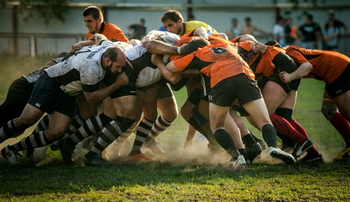

4 Most Important Things To Learn From Sports

The life of an athlete teaches a lot that one can learn & apply in their lives. To perform at an extraordinarily high level, athletes experience & go through a lot in a much smaller time frame which one might not experience even in his entire professional life. In the corporate world or any other field, one is into, one should replicate their success by learning from the traits they display on the field & by drawing valuable insights from the mindset and habit they display off the field. One should draw parallels from the life of sportsmen only to bring in the right attitude & proper ingredients to form a perfect recipe for success. We all seek to scale great heights & display performance at the highest possible levels of success. And in order to achieve it, we need to have a winner’s mindset & athletes demonstrate this every time they perform on the field. Throughout their journey from preparation to the successful result, they display grit, patience, determination, and a never-give-up attitude only to emerge victorious towards the end. They teach us the value of staying on course & focus on the process. Focusing on only the things that matter & which is under our control, without bothering about an end-result or potential consequences surely guarantees success. Being well-prepared and practicing industriously before the crucial game is another aspect one should derive from sports. Below are 5 important lessons one can learn from a sportsperson of their favorite sport:
Balancing Winning & Losing: Winning & losing is a part & parcel of the life of every sportsman. They understand that winning & losing is a part of the process & not the final outcome. They only serve as an opportunity to improve themselves to perform better. They act as a feedback mechanism required to plug in the loopholes & reflect on the areas where improvement is required. Their body language & mental composure in both the events speaks a lot about their resilience & the equanimous mindset they carry. They know it’s a cycle everyone oscillates through without one being a permanent state. They know how not to bog down by their failures & how not to let success go through their head. They never miss an opportunity to learn in both events. Life is also fraught with many ups & downs, in one’s personal & professional life & it needs to be dealt with in the same way as athletes do.
Staying Calm under Pressure Situations: Athletes deal with pressures day in & day out. Right from the anxiety of getting selected in the team to putting their best & winning for their team in front of the roaring crowd having great expectations from them. Crunch situations do exist in a game & they need to emerge from it with flying colors. They need to stay calm & be in that moment only to focus on doing what is right for the team. They need to hold on to their nerves & think through clearly amidst all the chaos around them. The business world is also surrounded by a lot of ambiguities & uncertainties and so business leaders are expected to make the right decisions amidst whatever constraints they are dealing with. The right mindset to deal with pressure can be learned from sportsmen, only the arena changes, but concepts remain the same.
Value Consistency: You can only reach the top if you display grit, perseverance & determination in the path that you tread along. The journey of a sportsperson is long, tedious & a testament to a plethora of things. Right from playing at the lowest level to playing at the highest (international) level, they are faced with a lot of challenges & thorns to deal with. Their mental toughness & self-discipline is being tested. Amidst all these, their consistency in applying themselves & improving themselves at each stage can only help them evolve into true professionals. Great leaders value consistency over everything. It’s that burning desire & passion when nurtured consistently throughout the process is that helps you to gain the desired results. Unflinching attitude & Unflagging enthusiasm to work tirelessly towards your goals gives you unparalleled rewards & results. Sportsmen having a prolonged career at the highest level are naturally very consistent for us to have learned these values from them.
Leadership Lessons: In a team sport, leaders play a crucial role in driving them towards the results. Whenever the team is under pressure, players gaze towards their captain to take the right decisions & to marshal his troop through the stressful situation. Leaders are expected to bring optimum results within the limited resources they are entrusted with. Strategizing & managing the game-plan along with the team-building skills are learned from leaders in sports. Coaches & Captains assist, mentor & motivate their players to enable them to give their best possible performance in the larger interest of the team. They take care of their player’s physical & mental health. Delegating responsibilities & banking on their lead players in critical situations help the team evolve into an empowering one & this is a true hallmark of a great leader. All these leadership qualities can be replicated in a corporate or any other field.
Sports teaches you a lot and there are valuable life lessons that one can learn from. Typically all the possible challenges one face in his entire life-cycle can be encapsulated in a single game. Sports enthusiasts & fans should be mindful & meticulous about all these nuances that teams exhibit while watching the game. This will make them well-equipped in reading situations and counter all the challenges you might possibly face in your life.
Thanks for reading . Please feel free to share your comments and feedback.